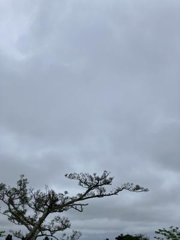
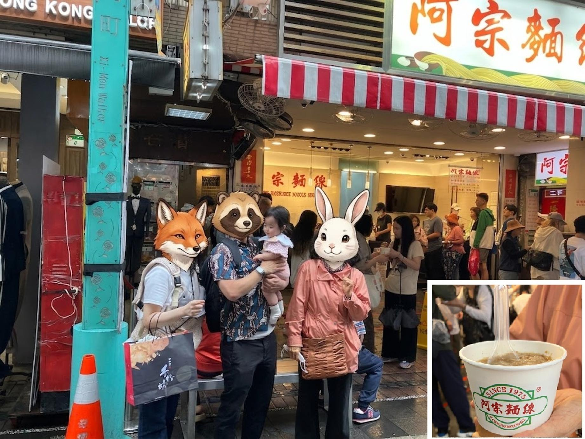
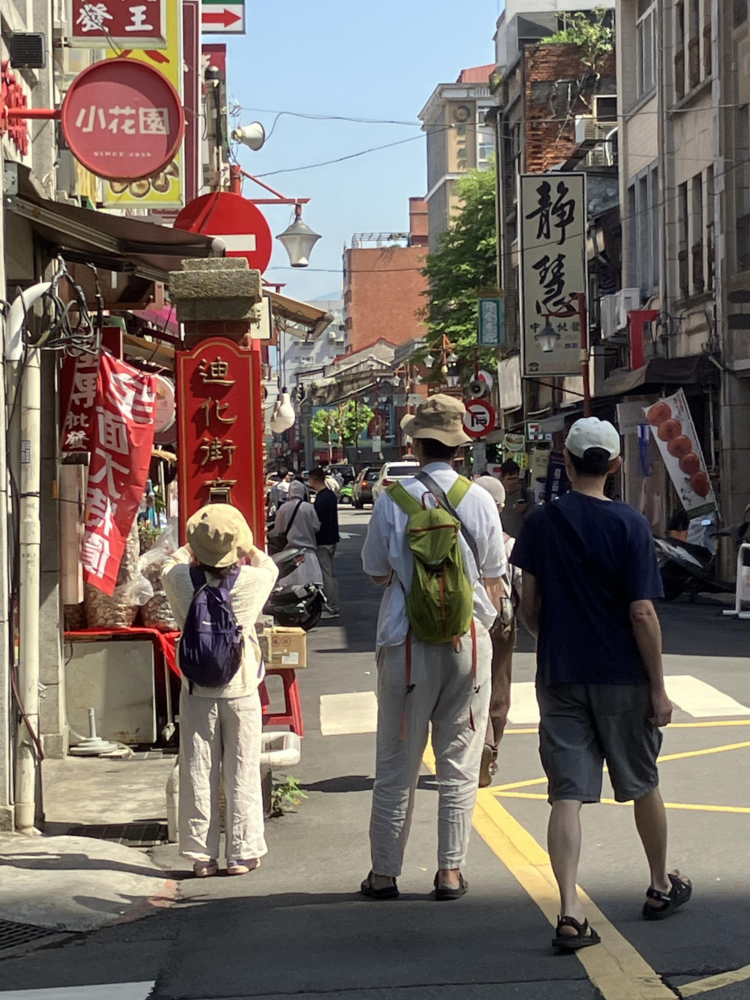
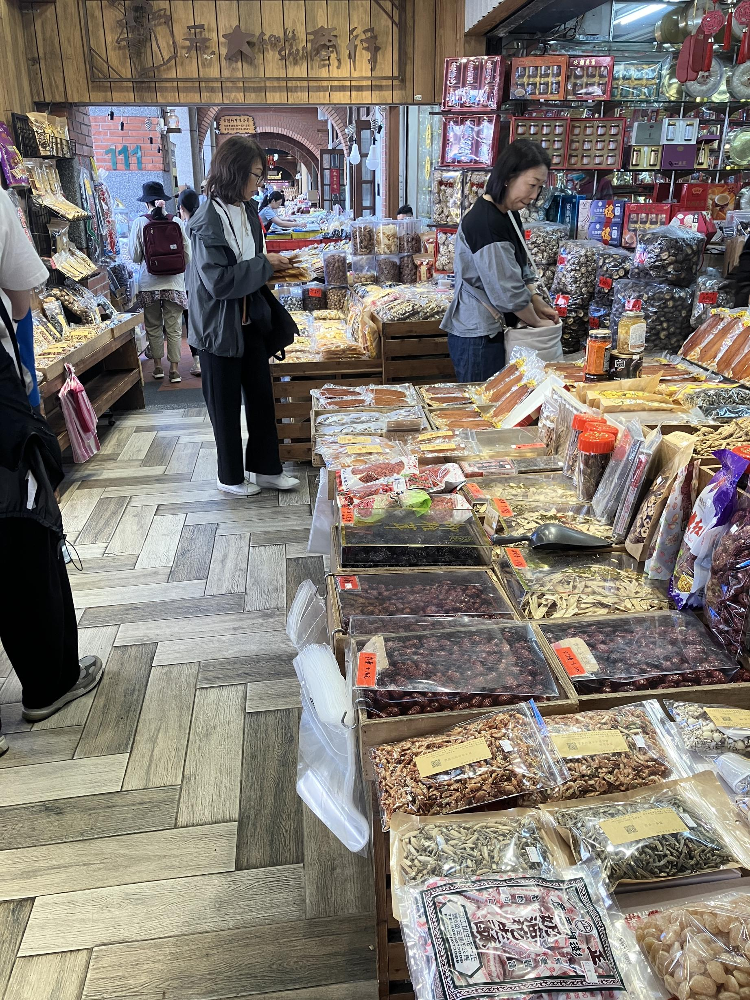
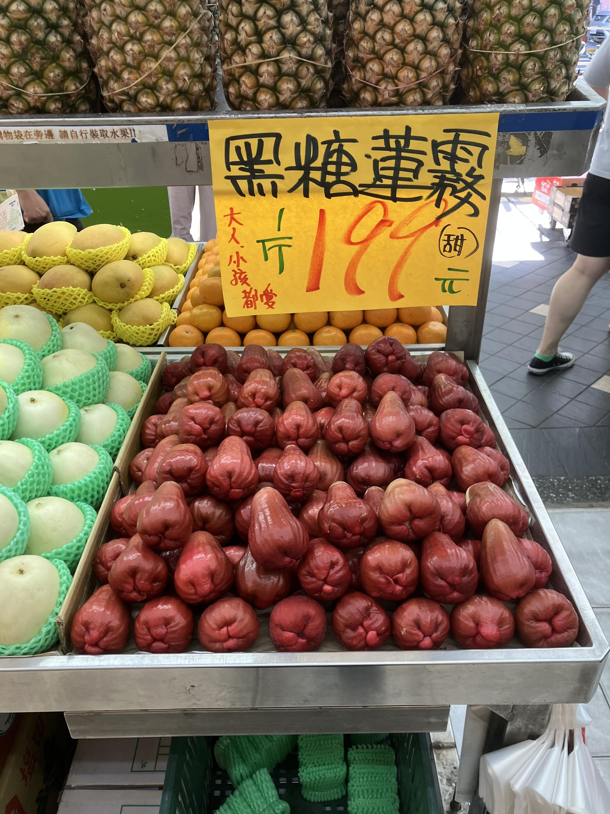
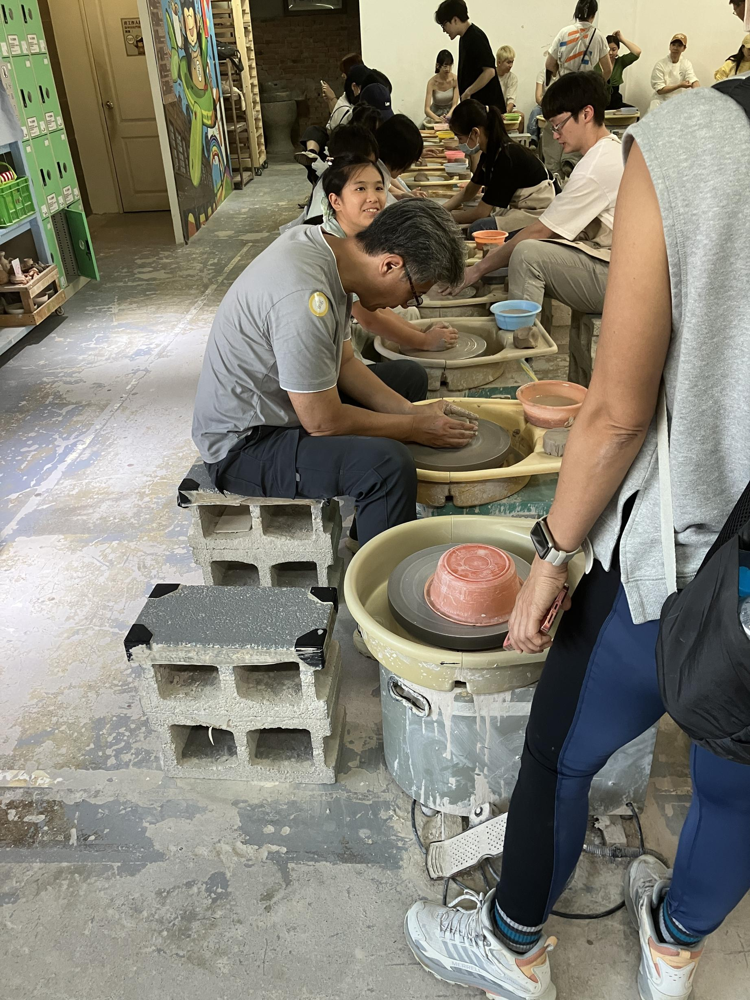
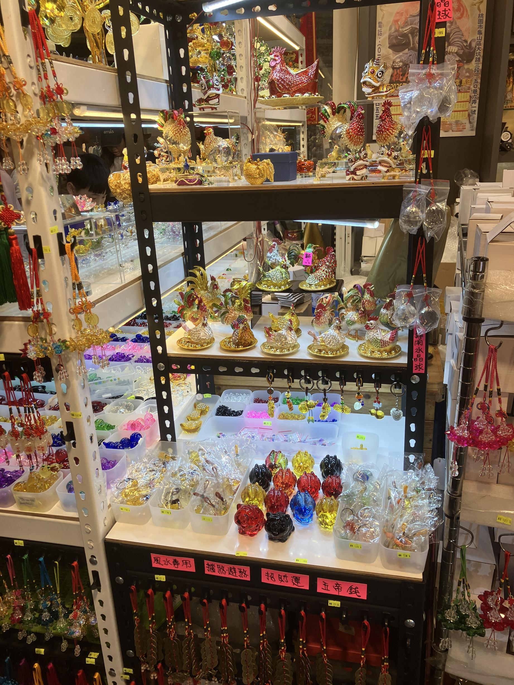
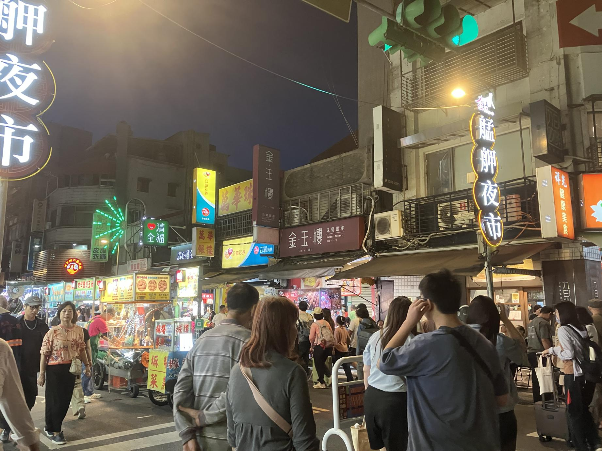
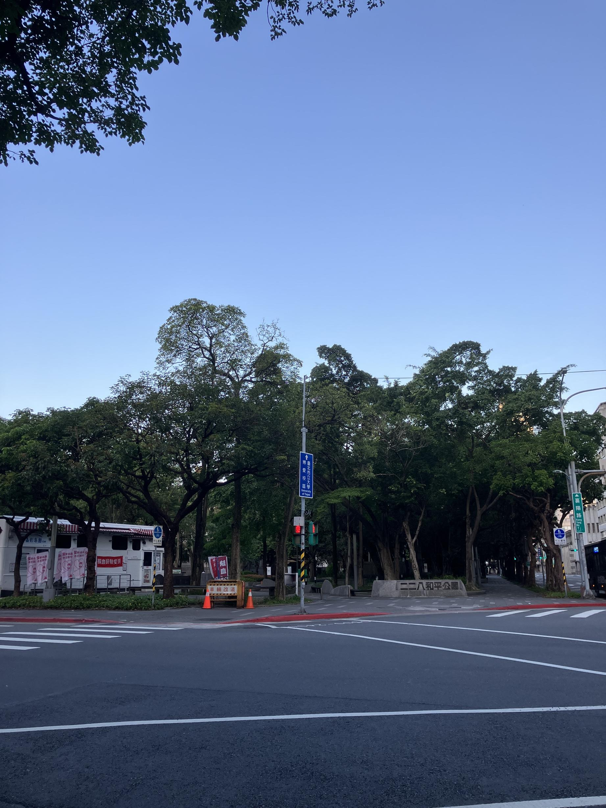

うるがいの話 ある日
最新: メーデーの日【うるがいの話 ある日】とは 一日だけのプログです
『うるがいの話』の最新一日だけのプログで、通信料が少なく経済的だ。カニの画像をクリックすると全ての日付が載る『うるがいの話』サイトを表示します
|
|
【うるがいの話】 うるがい(ｳﾙｶﾞｲ urugai)とは、『もずくがに』の名前でとても大きくなります。 |
|---|---|
|
|
【カミマヤーの話】 猫のことを方言でマヤーといいます。カミマヤー（kamimayaa）とは、神の猫のことです。 |
|
【たながぁの音楽】 たながぁ（ﾀﾅｶﾞｰ tanagaa）とは手長えびのことで、何種類かあり大きいのは車 エビぐらいになります。 |

|
【ぶながぁの話】 ぶながぁ(ﾌﾞﾅｶﾞｰ bunagaa)とは、赤い髪の毛、赤い身体、そして身長は１ｍ２０ｃｍ ぐらい、川の蟹を食べているの目撃された。場所は沖縄県国頭郡大宜味村のと ある村僕の隣近所に住んでいる爺さんから、聞いた話です。 |
|
|
【ギーマの話】 ギーマ(giima)とは、山原の里山に咲くスズランに似た、 花を付けます。実は食べられます、 気が付くと口の周りが紫になっています。 |
2026年05月01日 (金）メーデーの日
16:31

昨日の夜『明日、銀行で記帳する』とヨメが、言う。ン？、休み
ではないのか・・・。リタイアした人は、ほろ苦いメーデーの日
の思い出はあるものの。
２回目の旅行で行った場所です。暇人の私に、子供が薦めてくれ
た所です。
２日目の１１時２５分：西門で素麵を食べる

当初は、台湾随一の問屋街である「迪化街（ディーホワジエ、て
きかがい）へ行く予定でしたが、紆余曲折があり、コドモがウー
バーでタクシーを頼み、台北駅から西門へ行きました。帰りもタ
クシーで、お金はコドモのクレジットカードから引き落とされる
らしい、便利だった。待ち時間、ほとんどなし。
３日目の９時２５分：迪化街Dihua Street

【ＭＲＴ緑線「北門駅」３番出口から徒歩約５〜１０分で南側入
口付近へ】と事前に調べていたが、台北駅から、北門駅へ電車で
行こうと地下街を歩いていたら、電車は乗らずいつの間にか「北
門駅」に着いていた。グーグルマップで、迪化街を探しながら歩
いたが、遠いっす。早い時間帯だったのか、開いている問屋はひ
とつもみつけられず、乾物屋だけがやたらと多かった。

一斤（６百グラム）、１９９元（約千円）の連霧。前日子供の友
達の実家で、一つ頂きました。リンゴの味です。

３日目の１６時２７分：鶯歌陶瓷で陶芸をする人達

台湾 鶯歌陶瓷
鶯歌は新北市にある陶磁器の街で、「台湾の景徳鎮」とも呼ばれ
るほど陶器産業が盛んなエリアです。約200年以上の歴史があり、
食器から芸術作品まで、さまざまな陶磁器のお店や工房が集まっ
ている。
コドモが、住んでいる鶯歌というところ。余り期待していなかっ
たが、凄い所でした。お土産も少々買いました。

３日目の１８時５２分：廣州街観光夜市（通称：艋舺夜市）

コドモが、薦めたスイカのジュースが一番美味しいかった。
４日目の５時４７分：二二八和平紀念公園

夜が明けるたばかりの公園前です。ここで、野生のリスを見まし
た。